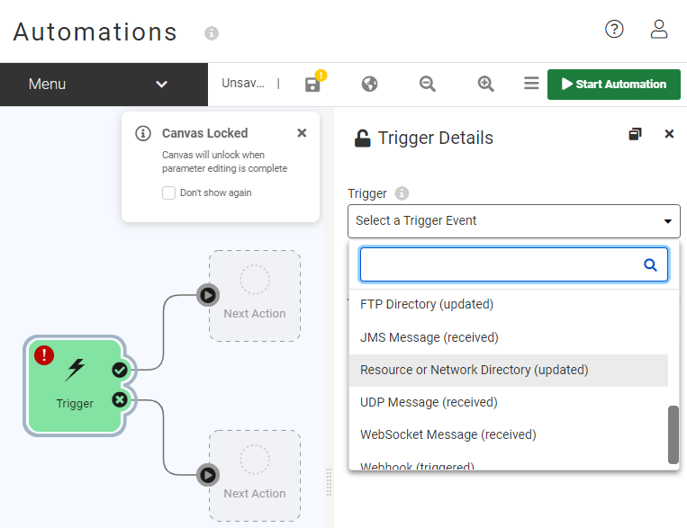
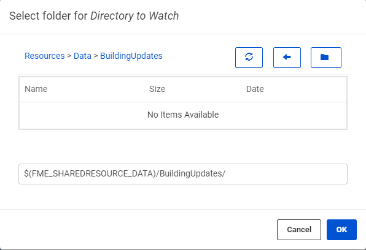
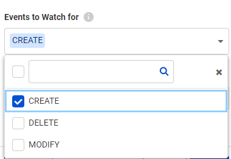
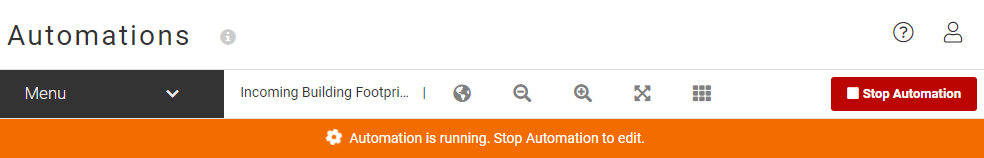
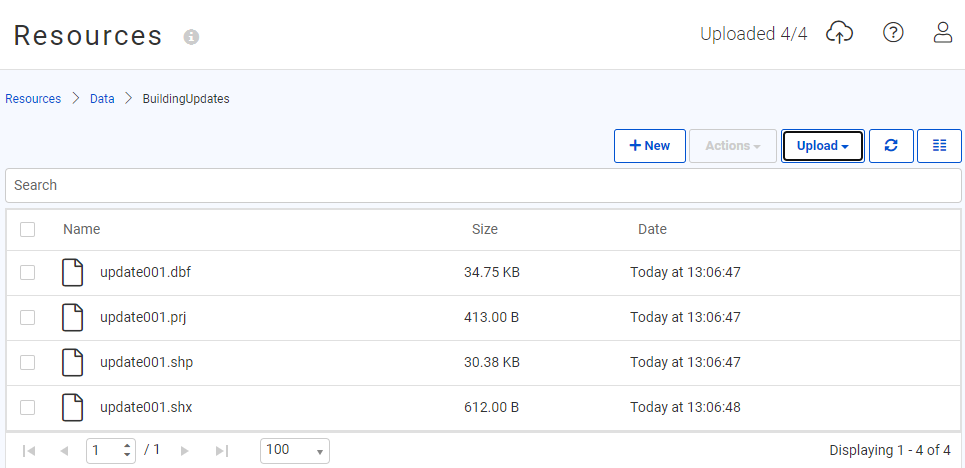
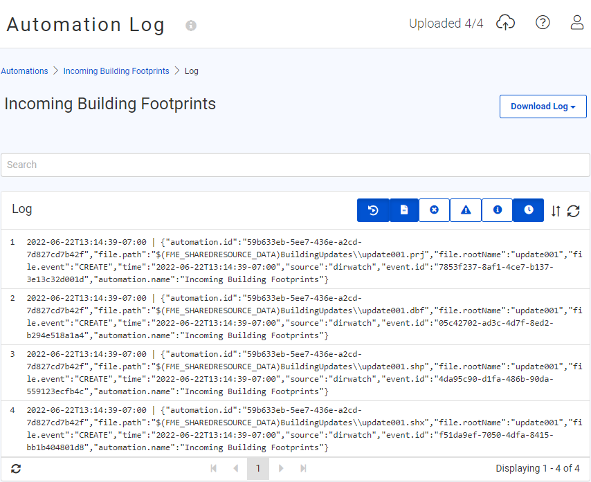

After completing this unit, you’ll be able to:
As a technical analyst in the GIS department, you want to start experimenting with Automations in FME Server. The Directory Watch protocol seems like a good place to start, and you were already thinking about a shared folder where users place Shapefile datasets for adding to, or updating, the corporate database.
Login to the FME Server (2022.0 or later) web interface.
The first step is to create a Resources folder to upload the data. Open the FME Server web interface and navigate to the Files & Connections > Resources page.
Browse to the Data folder and create a new subfolder called BuildingUpdates:

Now to create the Automation that will watch the BuildingUpdates directory for incoming files. Navigate to Automations > Build Automation on the side menu bar. In the Getting Started dialog that appears when you go to the Automations page for the first time, click on the Build tab, and click Create New to start a new Automation.
By default, Automations starts in guided mode. This means that there is already a Trigger node on the canvas but it will still need to be configured.
Start by double-clicking the Trigger and a parameter box will appear on the right-hand side of the canvas. Select Resource or Network Directory (updated) from the drop-down list as the Trigger for this Automation.

After selecting a Trigger type a list of configurable parameters appears in the dialog. Click the ellipsis button to browse the FME Server Resources and set the Directory to Watch parameter. Select the newly created BuildingUpdates folder under the Data subfolder:

Leave the Watch Subdirectories and Watch Folders parameters set to No, since we are only interested in monitoring for files in the BuildingUpdates folder directly.
Then for the Events to Watch for parameter remove the MODIFY and DELETE actions. Since we are looking to add to the corporate database, in this example we are only interested in monitoring for new files arriving, not old ones being changed or removed:

Lastly, change the Poll Interval to 30 Seconds, and then in the bottom left corner, click on the Validate button to ensure the trigger was set up correctly. Now click Apply to save these parameters. In the canvas, the Trigger node will update to show it is a Resource or Network Directory (updated) Trigger.

Save the Automation by selecting Menu > Save As and name the Automation "Incoming Building Footprints".
Before we start the Automation, we need to add an Action so the Trigger protocol can parse the notifications onwards. Before processing the data we first want to check the Resource or Network Directory (updated) Trigger is working as expected. To do this we can send the incoming messages to a log file located on FME Server.
Select the Next Action node from the Success Output port and set the Action to Log a message.
Click on the drop-down arrow for the Message parameter and select Event > Event as JSON because in this instance we want to record the entire incoming message from the Resource or Network Directory (updated) protocol.
Click Apply to save this Log configuration.

In order for FME Server to start watching the directory for incoming files, the Automation must be enabled. Select the Start Automation button in the top right corner.
The button will turn red and an orange warning ribbon will appear across the canvas indicating that your Automation is currently running. This means FME Server is now checking that directory every 30 seconds for updates.

Now let's test the Automation. Download the source Shapefile datasets here.
Select a set of files (.dbf, .prj, .shp, .shx) and upload these files into the newly created Resources folder. There are two ways to do this.
You can use the file system (by copying the files to C:\ProgramData\Safe Software\FME Server\resources\data\BuildingUpdates on the Server machine) or use the FME Server web interface (Resources > Data > BuildingUpdates > Upload > Files).

Check for updates in the log by selecting Menu > View Log File from the Incoming Building Footprints Automation.
If the log is not yet present, select the refresh button until it appears. You will see four CREATE messages from the Logger showing the individual file paths.

When you view this log file you might also notice reports of the Automation sending Jobs to FME Engine. This is because FME Server is actually performing the Log action using a simple FME Workspace.
Now we know how the Resource or Network Directory Watch Trigger works! We will see in subsequent exercises how to process this information.